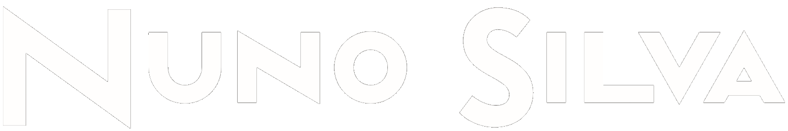

Hello, my name is
MSc Computer and Telematics Engineering
My name is Nuno Miguel Soares Silva and I was born in Porto. I'm a student in MSc Computer
and Telematics Engineering (Engenharia de Computadores e Telemática) at Universidade de Aveiro.
I'm currently working as a C++ Developer at Critical Techworks Porto.
I've developed some IoT projects that gather data and create smart apps.
Since I've discovered robotics that I find fascinating frameworks like ROS.
I share a great passion for gaming and game development.
I'm someone who learns quickly and adapts to any problem to finds solutions.
Space Invaders game in 3D conserving the 2D classic style.
This game was made interely using JavaScript and WebGL.
Original sprites made on 3D Builder.
Developed for Visual Computation university subject.
An Android App for a design project. This is also my first Android App.
Ao Vivo is an App that guides you through venues in the city of Porto where you can go to gigs from Indie Rock to Heavy Metal.
This is my master's thesis.
AtlasCar is a researching program for ADAS (Advanced Driver Assistance Systems) at Universidade de Aveiro.
Calibration algorithm for the car camera and to use the video stream to auto-detect and track cars and people on the road.
A calibration algorithm was developed to be used by the car's camera. The camera and LIDAR sensors enables the detection of potetitial objects
with data clustering algorithms and template matching. Samples of labelling datasets were created to produce results.
This project was made under ROS Kinetic and OpenCV mainly using C++ and Python.